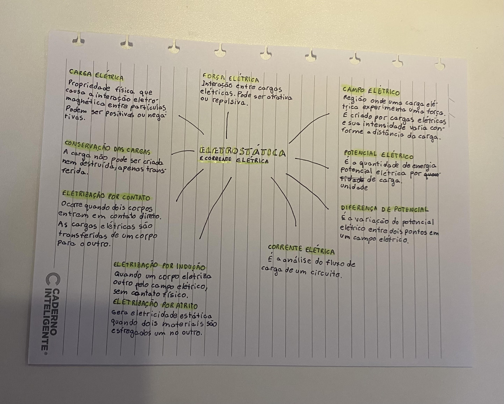
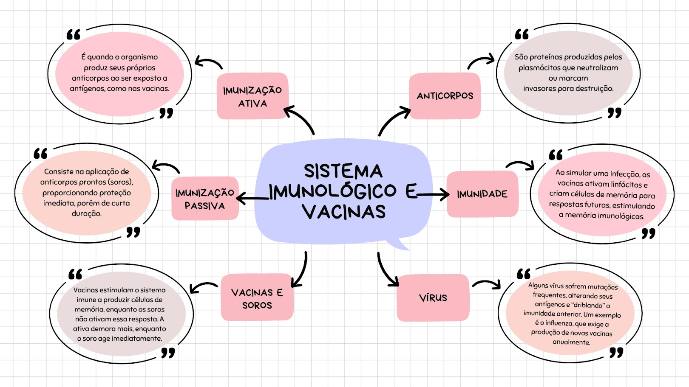

Atividades de Natureza
1º Trimestre
2º Trimestre
3º Trimestre
Poluição da Água
Na primeira aula de natureza que tivemos esse ano, estudamos sobre os diferentes tipos de poluição (do ar, da água e do solo) e, em grupos, escolhemos um tipo de poluição para desenvolver uma pesquisa e apresentação. Nós escolhemos a pesquisar sobre a poluição da água e foi um trabalho muito interessante de realizar, aprendi muitas coisas novas. Para acessar a apresentação, basta clicar na imagem ao lado!
Competências e habilidades: C1 - H1, H2 e H4.
Mapa Mental Sobre Eletrostática
Para fixar os conteúdos relacionados à eletrostática, recebemos a missão de desenvolver um mapa mental com os principais conceitos desse tema. Abordei os conceitos de carga elétrica, conservação das cargas, força elétrica, campo elétrico, potencial elétrico e corrente elétrica. Gosto muito de fazer resumos manuais e com certeza me ajudou a compreender esses conceitos, além de ser um ótimo material de revisão para uma futura prova. Para visualizar o mapa mental em tamanho aumentado, basta clicar na imagem dele ao lado!
Habilidades: H29, H30 e H31.

Estequiometria na Indústria Brasileira
Seguindo os estudos sobre estequiometria e suas aplicações na indústria brasileira, nós nos dividimos em grupos e recebemos uma equação química para pesquisar, estudar e montar uma apresentação sobre. Eu e meu grupo pegamos a reação da eletrólise do cloreto de sódio. Foi um trabalho muito legal de desenvolver e nos permitiu aprender muitas coisas novas. Para acessar a apresentação, basta clicar na imagem ao lado!
Competências e habilidades: C2 - H7, H9 e H10.
Tabela de Doenças Relacionadas a Proteínas
Para aprofundar o conhecimento sobre biomoléculas e após termos aulas sobre proteínas, vitaminas e ácidos nucleicos, tive de preencher uma tabela com diversas informações sobre doenças que possuem relações com proteínas (com a sua falta, deficiência ou ausência). Para cada doença indicada, pesquisei a proteína envolvida, a função da proteína, os efeitos da sua deficiência no organismo e as formas de tratamento possíveis. Foi uma atividade bem legal de realizar e me permitiu ir além nesse assunto. Para visualizar a tabela, basta clicar na imagem ao lado!
Competências e habilidades: C4 - H23 e C5 - H24, H25 e H28.
Sistema Imunológico e Vacinas
Compondo os estudos de sistemas imunológicos e vacinas, desenvolvi um mapa mental baseado nos flashcards disponibilizados pelo professor, conforme as instruções da atividade. Foi muito legal desenvolver um material visual e próprio para estudar esse assunto. Para ver o mapa, clique na imagem ao lado!
C4 - Compreender o funcionamento dos organismos vivos em geral e o ser humano em especial, considerando suas relações com o ambiente em que vivem, abordando aspectos físicos e socioculturais. H23 - Formular propostas de alcance individual ou coletivo, utilizando como critérios a preservação e a promoção da saúde individual e coletiva.

Glossário de Eletroquímica e Eletricidade
Para aprender mais sobre eletroquímica e eletricidade, montamos um glossário em modelo de e-book, explicando 22 conceitos relacionados. Foi um trabalho bem completo e legal de fazer, aprendi muito. Para ver a apresentação, clique na imagem ao lado!
C2 - Aplicar os conceitos fundamentais e estruturas procedimentais das Ciências da Natureza na explicação de fenômenos cotidianos, bem como dominar processos e práticas da investigação científica. H6 - Compreender os conceitos relacionados à Física em seus diferentes ramos: Astronomia, Mecânica, Acústica, Óptica, Termologia, Calorimetria, Ondulatória Eletricidade, Magnetismo e Física Moderna e Nuclear. H7 - Compreender os conceitos relacionados à Química nos seus diferentes ramos: Fisico-química, Química orgânica e Química Geral. H9 - Explicar os conceitos de energia, matéria, vida e transformação para explicar fenômenos naturais e procedimentos tecnológicos.
Campo Magnético Terrestre e Auroras
Dentro do conteúdo de campo magnético terrestre e auroras, desenvolvemos um site com diversas informações sobre esse tema. Foi muito legal aprender mais sobre esse conteúdo e integrar com meus conhecimentos em programação. Para navegar pelo site, basta clicar na imagem ao lado!
Competências e habilidades: não encontradas.